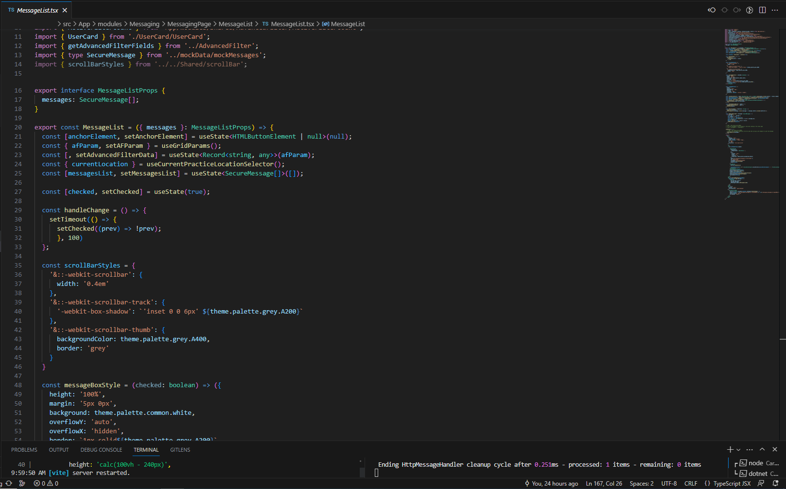

Gaming Community Forum & Wiki
A community hub for the popular online multiplayer vehicular combat simulator War Thunder
One of my interests since childhood is aviation, with many of my early aspirations and passions revloving around it. Unsurprisingly, when a game that was intiailly created on the basis of flying World War II fighters in a simulator environment was announced, I was immediately enthralled and had to give the game a try. War Thunder has now been active and growing for over 10 years, and having been one of the first to explore this game, I felt the desire to create something as a token of appreciation to all these years of gameplay.
My plan was to build an online hub for players to share content and learn about the game, whether it be clips, screenshots, or Q&A style discussion posts. I wanted to build a site that fostered improvement and a shared appreciation of the game. The original goal was to include Wikis that had descriptions of in-game vehicles and guides, a forum section for discussion and posting of user content, and profiles allowing one to view their in-game profiles from the web browser.
Initial Designs
The initial concept was inspired by existing resources. Being such a large and old game, War Thunder already has many sites that serve as examples of what I intended to build. There is already an official wiki, forum, and player search, but I was hoping to combine all these aspects into a singular hub that would be more up to date and navigable.
Lo-Fi frames of the original concept
Site Map that demonstrates user flow + functionalities
After drafting some basic frames to illustrate the intended layout of the pages, I also created an initial map to visualize each page that would eventually need to be developed. These were also labeled with short descriptions to clarify the technicalities of each page.
Building the Site
The Structure: Utilizing EJS Templates
The initial process of constructing the site began with building the structure, in other words the HTML pages which everything would be displayed with. However, to meet the non-static nature of a forum and community page, I needed to account for the need to update pages as necessary. To meet this requirement, I used embedded JavaScript templates (EJS) to build each frame of the website. The JS essentially connected the HTML with the back end, allowing for efficient user inputs as well as the ability to update pages as new information was added and updated on the page. In the above example, the EJS displays an up-to-date list of posts directly from the server database.

While many of the components had to be written from scratch, some could be refactored from other parts of the company's internal website. Such examples include the filter options, which were originally built for the patient and test result lists. Refactoring code greatly streamlined the process for certain components, but I often had to resort to researching and online documentation to implement certain features.